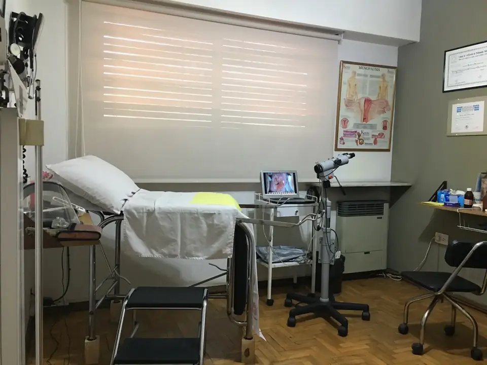
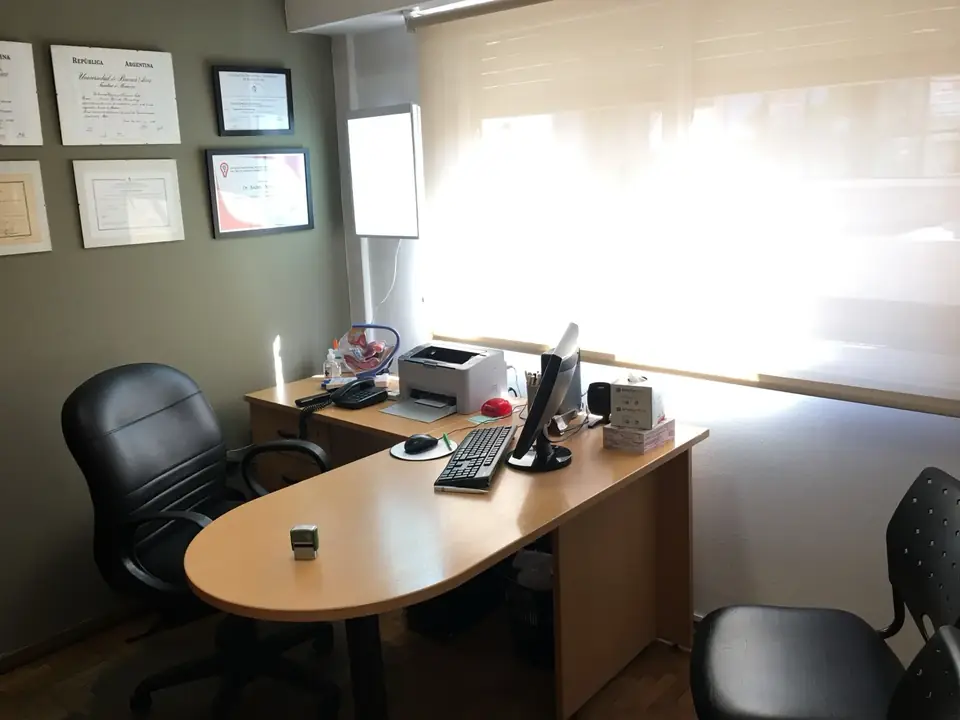
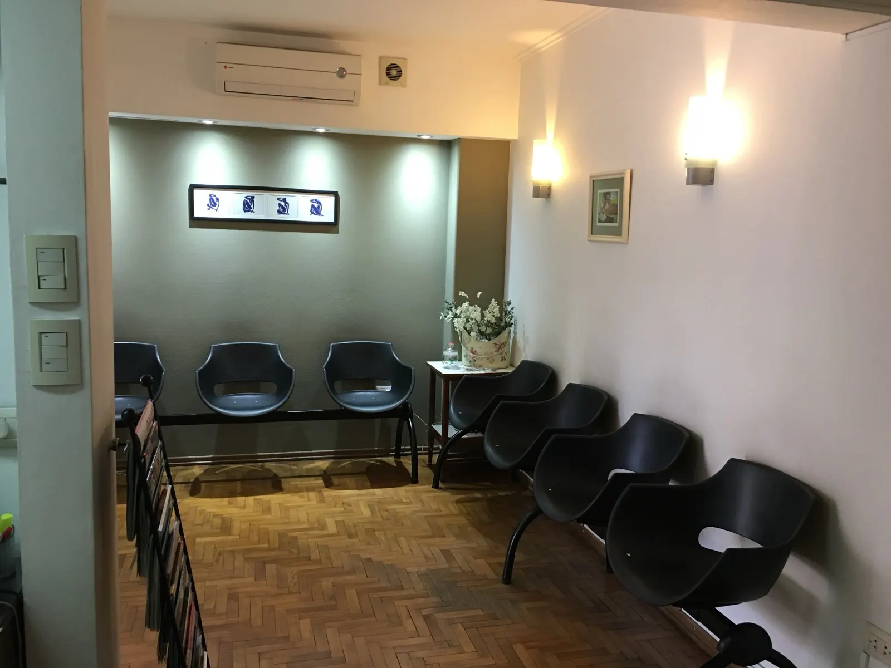
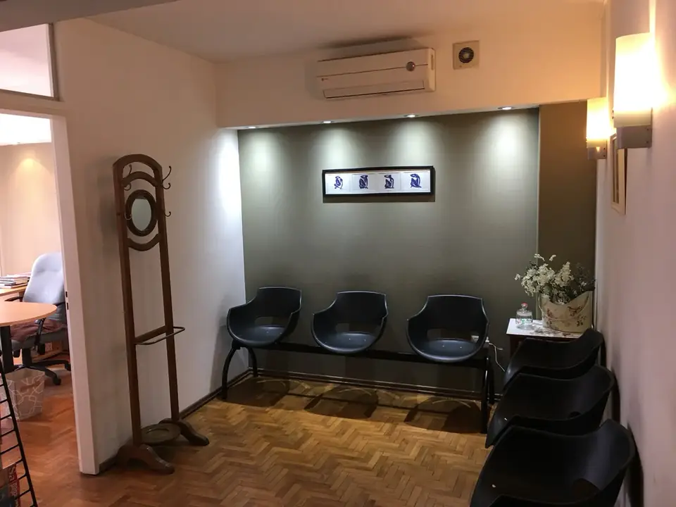

Consultorios, turnos y contacto
Reservá tu turno
Elegí el consultorio que te quede más cómodo. Si tenés OSDE podés solicitar turno a través de la cartilla; también podés llamar o escribir por WhatsApp.
Temperley, Zona Sur
| Lunes | 16:00 a 20:00 hs |
|---|---|
| Miércoles | 16:00 a 20:00 hs |
Si tenés OSDE podés solicitar turno a través de la cartilla.



